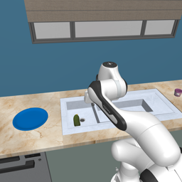
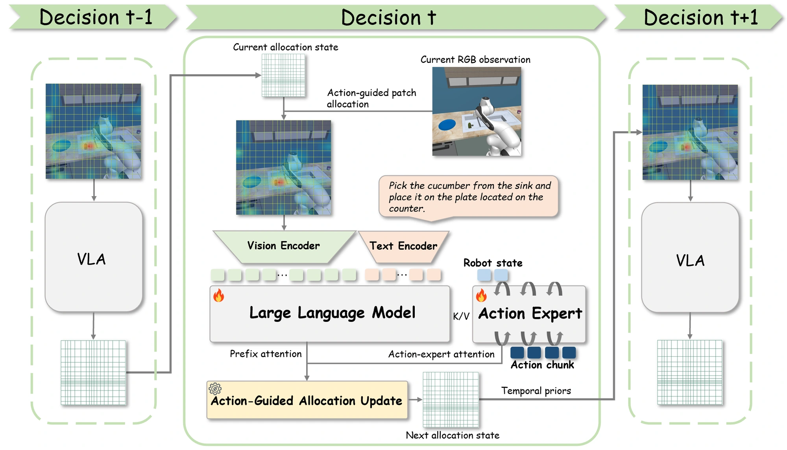
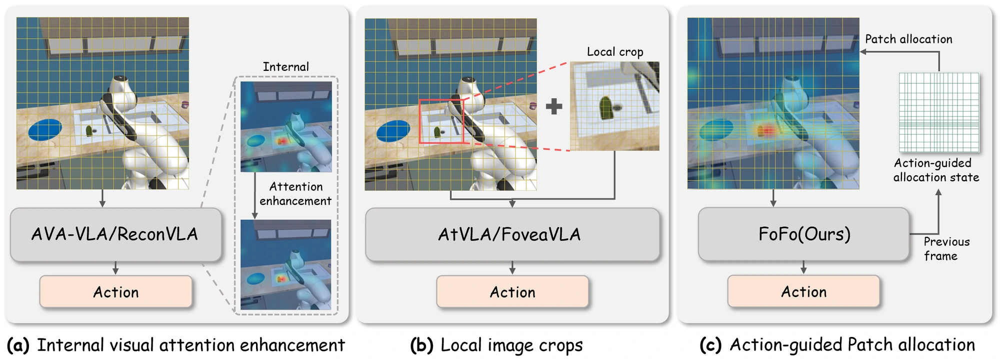
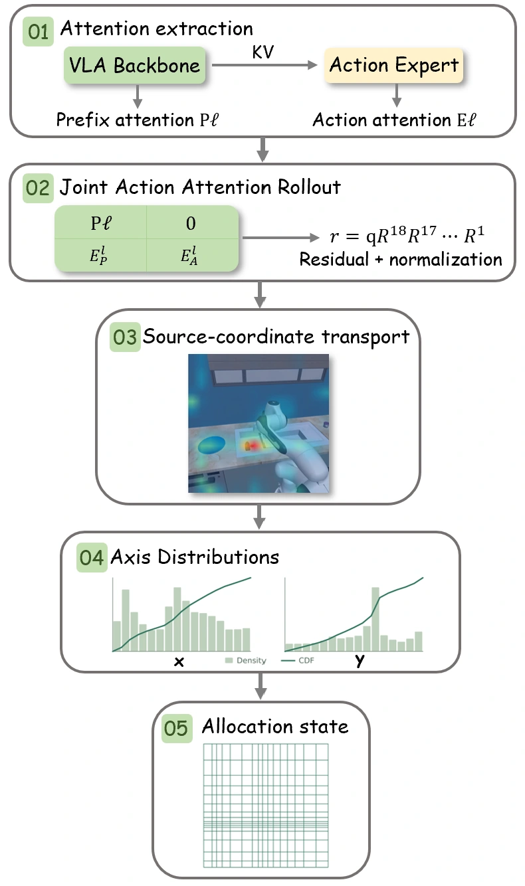
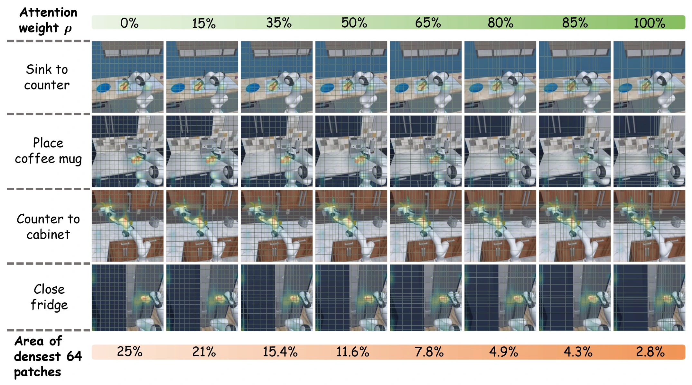
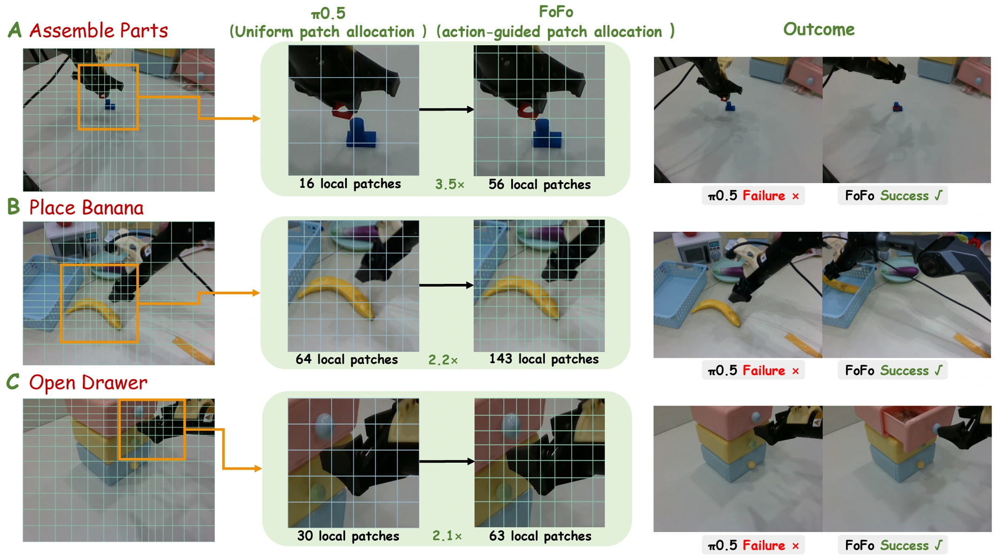

Focus and Follow: Action-Guided Patch Allocation with Temporal Priors for Vision-Language-Action Models
- 1 Institute of Automation, Chinese Academy of Sciences
- 2 University of Science and Technology of China
- 3 Traffic Control Technology Co., Ltd.

How FoFo works
Focus moves visual patches toward the object the robot is manipulating. Follow uses attention from the preceding decision to place those patches in the next frame. The full image remains in view at a fixed token budget.
Read the abstract
Recently, vision-language-action (VLA) models have demonstrated exceptional capability in completing specified tasks. However, most VLAs allocate the same patch density to task-relevant regions as to the background. Existing solutions attempt to implicitly strengthen attention of encoded patch features or explicitly increase patches of task-relevant regions through local image cropping, but the former leaves the initial patch allocation unchanged and the latter needs a substantial computational cost. In addition, we observe that the internal attention distribution of the VLA exhibits short-term continuity along manipulation trajectories. Based on these insights, we propose Focus and Follow (FoFo), an action-guided patch density allocation framework that uses historical attention as a temporal prior. Specifically, Focus uses an action-guided allocation state to assign more patches to task-relevant regions before visual encoding while preserving full-image coverage. Follow uses the historical frame’s attention to determine the allocation state of the current frame and repeats this process at each step. We further introduce a training strategy, which reuses the allocation state of the current frame to provide temporal priors for two adjacent frames along the trajectory, avoiding repeated historical-attention computation. Extensive evaluations in simulation and real-world environments demonstrate that FoFo can significantly improve model success rates with only a few fine-tuning steps and 2.6 ms of additional inference delay, while achieving a significant 5.31× training speedup over historical-attention recomputation.











Results
FoFo improves manipulation success on both evaluated VLA architectures. On real hardware, the largest gain is in assembling a small part onto a peg.
Mean success gain over π0.5 across four real-robot tasks
Additional mean inference time per π0.5 decision
Faster optimizer updates than recomputing the attention history
| Policy | Base | + FoFo | Gain |
|---|---|---|---|
| π0.5 | 16.9% | 32.5% | +15.6 pp |
| Xiaomi-Robotics-1 | 57.4% | 59.9% | +2.5 pp |
RoboCasa rollouts
Ten successful episodes from the 17-task π0.5 + FoFo study (500 fine-tuning steps). Each clip replays the recorded actions at 2× speed.
Real-robot demonstrations
Four recorded task demonstrations from the real-world dataset, shown from the external camera at their original speed.